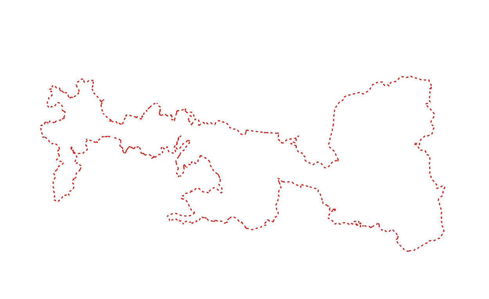

Step 3 - Use Maplibre to Render Your Map
In this step, we'll review the web map files in your repository, then set up a web server so you can view Te Ara Hura rendered via MapLibre GL JS.
Review Your Web Map Files
The two files to understand are index.html, which contains the code that invokes MapLibre, and style.json, which tells MapLibre how to render your source data. Both are already in the root of your repository.
The Stylesheet
Open the file called style.json in the root of your repository:
{
"version": 8,
"sources": {
"te-ara-hura": {
"type": "geojson",
"data": "sources/te_ara_hura.geojson"
}
},
"layers": [
{
"id": "trail-line",
"type": "line",
"source": "te-ara-hura",
"paint": {
"line-color": "#e41f18",
"line-width": 3,
"line-dasharray": [2, 2]
}
}
]
}
This is a MapLibre stylesheet, a JSON file that defines what data to display (sources) and how to render it (layers). Sources provide the map data (in this case a GeoJSON containing the trail data), while layers define visual styling (colors, line widths, opacity, etc.).
See the full MapLibre style specification for all the variations and possible parameters that can be defined.
The Web Map HTML
Open the file called index.html in the root of your repository:
<!DOCTYPE html>
<html lang="en">
<head>
<meta charset="UTF-8">
<meta name="viewport" content="width=device-width, initial-scale=1.0">
<title>Te Ara Hura Trail Map</title>
<!-- Local copies of MapLibre GL JS -->
<script src="lib/maplibre-gl.5.10.0.js"></script>
<link href="lib/maplibre-gl.5.10.0.css" rel="stylesheet" />
<style>
/* Required CSS statements defining the map to be the full size of the viewport*/
#map {
width: 100vw;
height: 100vh;
}
</style>
</head>
<body>
<div id="map"></div>
<script>
// JavaScript to create a new map using MapLibre GL JS
const map = new maplibregl.Map({
container: 'map',
style: 'style.json',
center: [175.0709, -36.7990], // Waiheke Island coordinates
zoom: 12
});
</script>
</body>
</html>
This HTML file brings together all of the assets and instructions MapLibre needs in order to render a map:
-
It gives the map a title — in this case "Te Ara Hura Trail Map", though you can change this to anything you like.
-
It tells the web browser where to look for the MapLibre rendering library, in this case it's at the nearby file path
lib/maplibre-gl.5.10.0.js. Note that it is typical to use the version from a Content Delivery Network (CDN) such as UNPKG, cdnjs or jsDelivr rather than storing a copy of the library alongside your project, but this way you can easily open MapLibre as a text file and see the code you are running in the next steps. -
It tells MapLibre how to render basic map elements in your browser such as zoom controls, popups, and the attribution link. This information is stored and available for your review at
lib/maplibre-gl.5.10.0.css. -
It tells MapLibre to render a map and to take up the whole browser window, or "viewport". Note both the style definitions under
#mapand the script block wheremapis defined vianew maplibregl.Map({...}). The style definition sets the dimensions of the map. In the script you can see we are providing:- The location of the stylesheet
style.json - A latitude and longitude for the map center
- A zoom level, or map scale
- The location of the stylesheet
Set Up a Web Server
To view your map in a browser, you need a local web server. We're using Caddy because it's simple, cross-platform, and has a single configuration file (Caddyfile) that's already set up in your repository.
The Caddyfile
The Caddyfile in the root of your repository configures Caddy to serve your map files on port 1234, with CORS headers that allow external tools like Maputnik (used in Step 6) to access your files. You don't need to edit it — open it as a text file if you're curious.
Install Caddy
If you're in Codespaces, Caddy is already installed — skip to Start the Server.
If you're working locally, install Caddy for your operating system:
macOS
brew install caddy
Linux
sudo apt-get install -y debian-keyring debian-archive-keyring apt-transport-https
curl -1sLf 'https://dl.cloudsmith.io/public/caddy/stable/gpg.key' | sudo gpg --dearmor -o /usr/share/keyrings/caddy-stable-archive-keyring.gpg
curl -1sLf 'https://dl.cloudsmith.io/public/caddy/stable/debian.deb.txt' | sudo tee /etc/apt/sources.list.d/caddy-stable.list
sudo apt-get update
sudo apt-get install caddy
Windows
Requires Chocolatey:
choco install caddy
Start the Server
Open a terminal (Terminal → New Terminal, or ` key in VS Code). Make sure you're in the root directory of your repository, then run:
caddy run
Keep this terminal window open — the server needs to stay running. To stop it, press Ctrl+C.
View Your Map
- If working locally: Open
http://127.0.0.1:1234/in your browser. - If working in Codespaces: Codespaces will automatically forward the port. Look for a notification or check the Ports tab in the bottom panel. You should see port 1234 listed with a forwarded URL like
https://xxxxx-1234.preview.app.github.dev/— click it to open your map.
You should see:
- An empty white map canvas centered on Waiheke Island
- The Te Ara Hura trail displayed as a red dashed line
What You Have Now
At the end of this step, you should have:
- A server running (locally at
http://127.0.0.1:1234/or via a Codespaces forwarded URL) - A working map displaying the Te Ara Hura trail as a red dashed line
At this stage, your map is only available locally (on your machine or in Codespaces). In the next step, we will enable GitHub Pages, where it will be viewable on the web.
Your Map Preview

This is what your map should look like when you view it locally or in Codespaces
← Previous: Step 2 | Next: Step 4 - Initialize GitHub Pages →